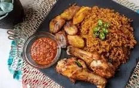
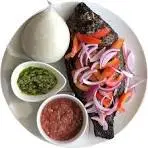
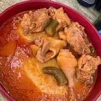
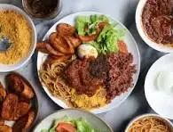

Jollof Rice
A spicy and savory tomato-based rice dish often served with chicken, fish, or vegetables. A favorite across West Africa, Ghana's version is bold and flavorful.

A spicy and savory tomato-based rice dish often served with chicken, fish, or vegetables. A favorite across West Africa, Ghana's version is bold and flavorful.

Made from fermented corn and cassava dough, Banku is usually paired with grilled tilapia and spicy pepper sauce.

A dough-like food made from cassava and plantain, pounded together and served with light soup or groundnut soup.

A delicious combination of rice and beans cooked together, served with stew, fried plantains, spaghetti, and egg or fish.